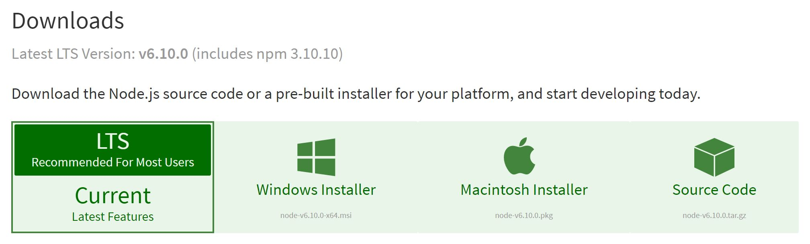

# Project Setup We will see what we need to do to setup our development environment. This material is part of the [mobile development course](https://github.com/MediaComem/comem-devmobil) for [Media Engineering](https://heig-vd.ch/formations/bachelor/filieres/ingenierie-des-medias). **You will need** * [Google Chrome][chrome] (recommended, any browser with developer tools will do) * [Sublime Text][sublime] (recommended, any code editor will do... **except Notepad**) **Recommended reading** * [Command Line][cli] --- ## Install Node.js .breadcrumbs[<a href="#1">Project Setup</a>] Node.js is a tool that allows developping back-end application with JavaScript, which we will not do in this DFA course. > We will need it to install a very useful tool. To install Node.js, go to the [download page][node-dl], get the installer for your system and **launch it**. <p class='shadow center'></p> > If you want more information about Node.js, see [here][node-js]. --- ### Check .breadcrumbs[<a href="#1">Project Setup</a> > <a href="#2">Install Node.js</a>] When you completed the installation, you can check that everything ran correctly by launching a **Terminal**. In this terminal, type the following command: ```bash $> node --version ``` > You should see in return the version number of your node installation (should be `v6.10.0`) --- ## Install `live-server` .breadcrumbs[<a href="#1">Project Setup</a>] Node.js gives you another command that we are going to use: `npm` `npm` stands for **N**ode **P**ackages **M**anager and is a tool you can use to download other useful tools, that could help you improve your development experience. > If you want more information about `npm`, see [here][npm] We will download **one of this tool**: `live-server`. > We'll see later what this tool does. Open your **Terminal** (if you closed it before), and type the following command: ```bash $> npm install -g live-server ``` > You should see some activity in your screen, meaning that the package is being installed. --- ### Check .breadcrumbs[<a href="#1">Project Setup</a> > <a href="#4">Install `live-server`</a>] When the installation is complete and the screen stand still, you can **check** that the installation went OK by typing: ```bash $> live-server ``` Your browser should open a page at `127.0.0.1:8080`. That page should return an error: **that's normal**. --- ## Create project directory .breadcrumbs[<a href="#1">Project Setup</a>] A **project directory** is a simple directory where all the files for a specific WebSite or WebApplication are stored. You will need a project directory for both **this course** and **the project** you'll have to deliver at the end. Right now, create an empty directory called `dfa-course` somewhere on your filesystem. > This `dfa-course` project folder is where we will put most of the examples and exercices that we will see in the course. > > Right now, it's completely empty. > > **Whenever we refer to** "your project" **in the slides, we are talking about this `dfa-course` directory**. --- ### Create `index.html` .breadcrumbs[<a href="#1">Project Setup</a> > <a href="#6">Create project directory</a>] Most (*if not all*) web project directories have an `index.html` file endpoint: * In WebSite, this is the **landing page**. * In WebApplication, this is the **page that loads the app**. ---- For this `dfa-course`, we **provide** you with the **content** of your `index.html` page. Go to [this page][index-gist], and **save it** at the root of your project directory, under the name `index.html`. > Hit `Ctrl + S` while on the page to save it on your file system. --- ## Access your project .breadcrumbs[<a href="#1">Project Setup</a>] Now that your project has an `index.html` file, we can see what `live-server` is all about. Open a terminal, and go to your project directory: ```bash $> cd path/to/your/project ``` Then, type the command that starts `live-server`: ```bash $> live-server ``` Identically to the last time, your browser should open at `127.0.0.1:8080`. But this time, you should see this: <p class='shadow'><img src='images/without-bootstrap.jpg' width='100%' /></p> --- ### What does `live-server` do .breadcrumbs[<a href="#1">Project Setup</a> > <a href="#8">Access your project</a>] `live-server` is two things. ---- **It's a simple Local Web Server.** That means it can serve the files contained in a directory, here the `index.html` file in your `dfa-course` directory, **as if they were on a distant server**. > `live-server` expects an `index.html` file at the root of the directory. ---- **It has Live-Reload.** With Live-Reload, `live-server` is able to activly watch **all the files** in the directory it's serving. Whenever it detects a **change on one of these files**, it automatically **reloads the webpage** to reflect those changes. > For `live-server` to detect the changes, you **have to save the file**. --- #### Let's see... .breadcrumbs[<a href="#1">Project Setup</a> > <a href="#8">Access your project</a> > <a href="#9">What does `live-server` do</a>] With `live-server` started and your WebSite open in your broswer... Open your `index.html` file in your text editor (*if you closed it before*), and change this line... ```html ... <h1>Hello, world!</h1> ... ``` ...with this line: ```html ... <h1>Hello, Yverdon!</h1> ... ``` **Save** your file and **go to your browser** to see that the changes have been detected and **applied**. **Revert** the line to its previous state, **save again** and see how magically the web page has changed. --- ## Resources .breadcrumbs[<a href="#1">Project Setup</a>] **Documentation** * [live-server][l-s] [chrome]: https://www.google.com/chrome/ [sublime]: https://www.sublimetext.com/ [node-dl]: https://nodejs.org/en/download/ [git]: ../git/ [cli]: ../cli/ [node-js]: ../node/ [npm]: ../npm/ [index-gist]: https://gist.githubusercontent.com/Tazaf/420a368389367a83fcfb96ab3a51bf8a/raw/1c5af02f1dd3248189b8e6869a02c5133232db7b/index.html [l-s]: https://www.npmjs.com/package/live-server